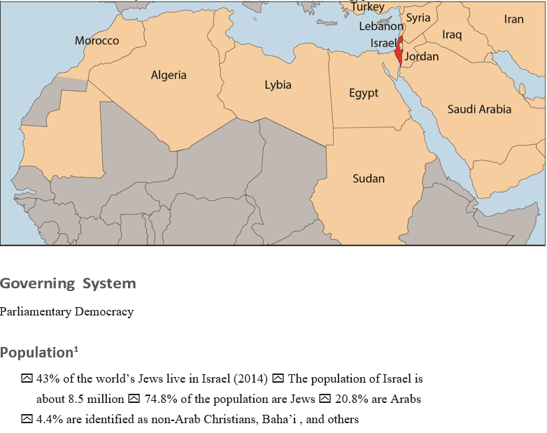

A brief history of ISRAEL
The history of the Jewish people, and their roots in the Land of Israel, spans thirty-five centuries. It is here that the culture and religious identity of the Jewish people was formed. Their history and presence in this land has been continuous and unbroken throughout the centuries, even after the majority of Jews were forced into exile almost 2,000 years ago. With the establishment of the State of Israel on May 14, 1948, Jewish independence was renewed.
Early History
In the first century, when the Jewish civilization
in Israel was already over 1,000 years old,
Rome destroyed the Holy Temple in Jerusalem
and conquered the Jewish nation. At this time,
the Romans renamed the region “Palestine” and
exiled a portion of the population. However,
some Jews remained.
For the two millennia after the Roman conquest,
no other state or unique groups developed in the
region. Instead, different empires and people
came, colonized, ruled, and disappeared. Jews
remained in Palestine during these changes.
Throughout these 2,000 years, Jews, regardless
of their current country of residence, continued
to view a return to their ancient homeland as
an essential part of their identify and a source
of hope.
Between 1517 and 1917, Palestine was part
of the Ottoman Empire. The region, initially
prospered under the Ottomans, but during the
Empire’s decline, it was reduced into a sparsely
populated, impoverished, barren area.
Meanwhile, the Zionist movement was
emerging in Europe in the late nineteenth
century, generated by increasing antisemitism
and violence against Jews in Europe as well as
the rising nationalism throughout the continent.
The Zionists, whose goal was the return of the
Jewish people to a sovereign state in the Land
of Israel, fostered increased Jewish immigration
to Palestine and sought international political
recognition of the Jewish right to independence
in Palestine.
When the Ottoman Empire was defeated in
World War I (1914–1918), its lands were ceded
to the victorious Allies who carved the land into
new nations, which included Iraq, Lebanon,
and Syria.
The British Mandate
Under the Treaty of Sèvres (1920), the League
of Nations formally gave control of Palestine
to the British government. Britain’s job was to
implement the Balfour Declaration, which had
been signed five years earlier, stating Britain’s
desire to create a homeland in Palestine for
the Jews. Even before this declaration, Jews
had begun to purchase land and settle in the
country. As they continued to do so, the Jewish
population grew to some 600,000 on the eve
of World War II. Of course, when the modern
return of Jews to the Land of Israel began,
Arabs were living there. Toward the end of the
nineteenth century and more so in the early
twentieth century, the national consciousness of
these Arabs emerged as Palestinian nationalism
and that nationalism aspired to independence.
Thus, the Arab desire for independence clashed
with the Jewish desire for return.
British control over this territory lasted from
1923 to 1948, during which time the authorities
were challenged by the demands by Zionists for
Jewish self-government, and a growing Arab
20 Contemporary Antisemitism Resource echoesandreflections.org
nationalist movement rejecting this Jewish
presence and nationalist aspirations. Growing
Jewish-Arab violence and attacks on British
personnel by some Jewish extremists led Britain
to announce that it sought to end its mandate
of the area.
During this period, there was also the 1939
“White Paper” that stated that Palestine would
be neither a Jewish state nor an Arab state, but
an independent state to be established within
ten years. The “White Paper” also limited
Jewish immigration to Palestine to 75,000 for
the first five years, subject to the country’s
ability to absorb them economically, and would
later be contingent on Arab consent. Stringent
restrictions were also placed on how much land
Jews could acquire. Despite efforts to rescind
the “White Paper” following the end of World
War II, it remained in effect until the British
departed Palestine in May 1948.
United Nations Partition Plan
Following Britain’s February 1947
announcement of its intention to terminate
its mandate government, the UN General
Assembly appointed a special committee—the
United Nations Special Committee on Palestine
(UNSCOP)—to make recommendations
on the land’s future government. UNSCOP
recommended the establishment of two separate
states, Jewish and Arab, to be joined by economic
union, with the Jerusalem-Bethlehem region as
an enclave under international administration.
On November 29, 1947, the UN General
Assembly voted on the partition plan, adopted
by 33 votes to 13 with 10 abstentions. The Jewish
side accepted the UN plan for the establishment
of two states. The Arab states rejected the plan
and almost immediately formed volunteer armies
that infiltrated into Palestine against the Jews.
Founding of the State of Israel 1948
Israel’s establishment as an independent
sovereign state was officially declared in Tel
Aviv on Friday May 14, 1948, by Zionist leader
David Ben-Gurion, the day the British Mandate
over Palestine was officially terminated, in
accordance with UN Resolution 181.
War of Independence (1948–1949)
When the UN voted to partition the Mandate
on November 29, 1947, Palestinian Arabs, with
the help from Arab states, launched attacks
against Israel to seize the entire Mandate. On
May 14, 1948, Israel declared independence
and was immediately invaded by the armies of
five Arab nations: Egypt, Syria, Transjordan,
Lebanon, and Iraq. The newly formed Israeli
Defense Force (IDF) managed to prevail after
fifteen months of war.
The Six-Day War (1967)
Israel was forced to defend itself when Syria,
Egypt, Jordan, and Iraq intensified their
attacks and Egypt illegally blocked Israel’s
access to international waters and expelled
UN peacekeeping forces. Four Arab countries
mobilized more than 250,000 troops in
preparation for a full-scale invasion. Israel
preempted the invasion in a defensive war and
managed to capture the West Bank from Jordan;
Gaza and the Sinai Peninsula from Egypt; and
the Golan Heights from Syria.
Israel Today
Since 1948, Israel’s population has grown
tenfold. Israel was founded with a population
of 806,000. Today there are 8.5 million Israelis;
about 75% of them Jews. Like other democratic,
multi-ethnic countries, Israel struggles with
various social and religious issues and economic
problems. It is a country of immigrants that
often came to the country dispossessed.
On the political front, most Arab and Muslim
states continue to deny the Jewish State’s right
to exist. Unfortunately, only two of the twentytwo
Middle Eastern states have signed peace
agreements with Israel—Egypt and Jordan. The
ongoing Palestinian-Israeli conflict is complex,
with challenges related to borders, settlements,
sovereignty, and other contentious issues. There
are those on both sides of the conflict who hope
one day to achieve a peaceful coexistence.
Location
Israel is located at the eastern end of the Mediterranean Sea, where Europe, Africa, and Asia meet. The country borders on Lebanon and Syria in the north, Jordan to the east, and Egypt to the south.
